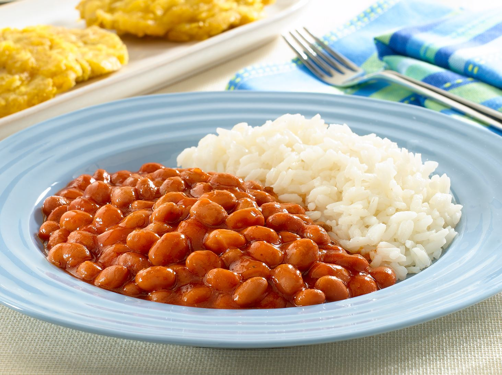

Rice and Beans
Homepage - Odin's Recipes

Description
This is a recipe I love to make since it's easy and delicious.
It is completely vegan.
Ingredients
For the rice:
- 5 cups water
- 1 tablespoon salt
- 1 ladle of oil (approximately 2-3 tablespoons)
- 5 cups rice
For the beans:
- Oil (about 2-3 tablespoons)
- 1 ladle of sofrito (approximately 1/4 cup)
- 2 packets of Sazón
- 1 can of beans (about 15-16 ounces)
- 1 can of tomato sauce (about 8 ounces) plus 2
cans of water (or 2.5 cans of water if using 2
cans of beans)
- Adobo seasoning (to taste)
- Oregano (to taste)
Steps
For the rice:
- Boil the Water: Bring 5 cups of water to a boil
in a large pot.
- Add Salt and Oil: Add 1 tablespoon of salt and 1
ladle (approximately 2-3 tablespoons) of oil to the
boiling water.
- Add the Rice: Add 5 cups of rice to the boiling water.
Stir it well.
- Cook the Rice: When the water starts to evaporate and
the rice begins to dry out, stir it again.
- Simmer the Rice: Reduce the heat to low, cover the pot,
and let it cook for 35-45 minutes, until the rice is
tender and fully cooked.
For the beans:
- Heat the Oil: In a medium saucepan, heat about 2-3
tablespoons of oil over medium heat.
- Add the Sofrito: Add 1 ladle (approximately 1/4 cup)
of sofrito to the hot oil and sauté for a few minutes
until fragrant.
- Add Sazón: Stir in the 2 packets of Sazón.
- Add the Beans: Add the can of beans to the saucepan.
- Add Tomato Sauce and Water: Add the can of tomato sauce
and 2 cans of water (or 2.5 cans of water if you are using
2 cans of beans).
- Season the Beans: Season with Adobo and oregano to taste.
- Simmer the Beans: Bring the mixture to a boil, then reduce
the heat and let it simmer for about 15-20 minutes, stirring
occasionally, until the beans are cooked through and the
flavors are well combined.